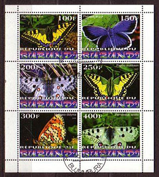
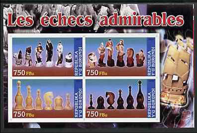
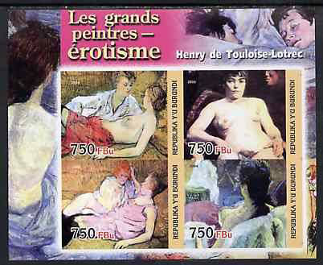
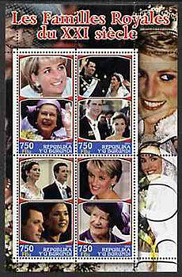
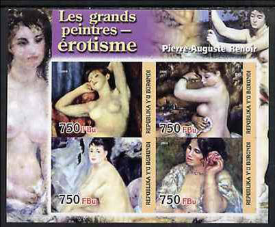
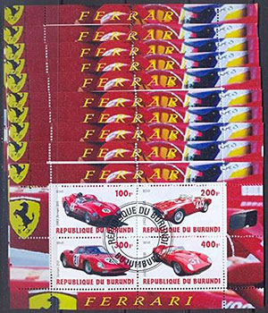
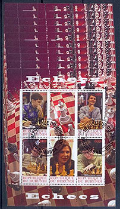
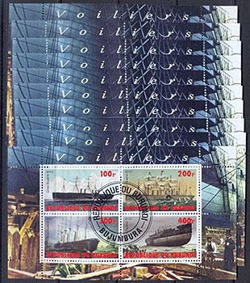

WHO MISINFORMS WHOM ON THE SUBJECT OF ILLEGAL POSTAL STAMP ISSUES?
WADP - Between MYTH and REALITY
By Victor Manta, PWO, AIJP
Summary
The author publishes his interview with the new leader of the World Association for the Development of Philately (WADP), and then presents the results of a survey of illegal stamp issues, originated in Burundi , that contradicts WADP leaders' optimistic assertions. The weaknesses of the over ten-year-long approach of the WADP and the UPU are becoming increasingly evident.
The year 2013 started as one of changes, and specifically replacements when it comes to the most important persons responsible for the fight against illegal postal stamp issues. At the Universal Postal Union (UPU) Mr. J.-F. Logette , the former UPU Philately Expert, Philately and IRC's Program Manager, member of the WADP Secretariat, was replaced by Mr. Louis VIRGILE (from France), the new Chief of the Philatelic Program of the UPU. At the World Association for the Development of Philately (WADP) the new Chair of the Management Committee is Mr. Artem ADIBEKOV, from Russia.
A month ago, after having congratulated the both officials for their new positions, the Philatelic Webmasters Organization (PWO) sent each of them e-mails, in which the PWO president wrote: Because the plans of the UPU in what concerns the fight against the illegal stamp issues look somehow outdated on the UPU site, I would like, in the name of PWO and of its members, to ask you some questions, that we will then publish on the PWO site ...
We never heard since from Mr. Virgile, even after sending him a second message, in which we asked him again, very politely, to collaborate with the philatelic press. His policy strangely reminds us of that of his predecessor, the late Mr. Logette, and it does not bode well...

1999 ButterfliesOn the contrary, Mr. Adibekov answered all of our questions, for which we thank him a lot! Please find below, in APPENDIX 1, the full text of the interview. Some basic excerpts follow:
“- 3. I think that for over 10 years the WADP has succeeded in reducing significantly the quantity of printing and spreading of the illegal postal stamps including by the introduction of the World Numbering System (WNS) which has played a great role in the achievement of WADP's main goal.
- 4. And, of course, the WNS has made a significant contribution to cleaning the philatelic market from the illegal stamp issues.
- 5. The work on the collection and analysis of such information (i.e. reliable data about the evolution of the illegal stamps market during the last 10 years - VM ) hasn't been carried out previously.”One can of course wonder which is the reason why Mr. Adibekov's displayed so much confidence when asserting that the quantity of illegal stamp issues decreased significantly in time, as long as he is not in possession of data that support his assertion (see 5. above). We at PWO are observing for a long time the philatelic market on the Internet and we cannot share his optimistic view. But don't just take our word for it and read the survey, that we publish below (in French, as APPENDIX 2), and that was carried out by Mr. Dima Siméon for the Burundi Postal Administration, a piece that we publish by permission of its author, and for which we are very grateful. Please read below just two excerpts from this work, accompanied by their free translations into English:
"- Par conséquent, les timbres-poste illégaux au nom de la République du Burundi qu'il a été possible de repérer jusqu'à ce jour et qui portent les années 1999, 2003, 2004, 2009 et 2010 sont résumés ci-après".
Therefore, the illegal stamps on behalf of the Republic of Burundi that could be identified so far, and that are from the years 1999, 2003, 2004, 2009 and 2010, are summarized below."- En résumé, pas moins de 360 feuillets auront été repérés (de neuf, six, cinq, quatre ou deux valeurs et chaque feuillet produit dans un format distinct constitue un produit qui est vendu séparément".
In summary, no less than 360 sheets have been identified, containing nine, six, five, four, or two values, where each sheet produced in a separate format represents a product that was sold separately.
2003 Pope John Paul IIPlease note that these are figures for only one country, Burundi , and for only five years, as specified on the stamps that were identified as illegal ones. WADP (and UPU) cannot plead ignorance because the author presented the results of his research at two international conferences, in Tunis ("The Future of the Postal Stamp", May 18 - 19, 2010) and Abuja (Feb. 2012). Therefore, the obsessive intonation of the same litany about the decrease of illegal stamp issues one hears from the WADP's and the UPU's old or new officials, and the explanation of this imaginary decrease by the major influence of the WADP Numbering System (WNS) does not find confirmation in the reality of the worldwide philatelic markets. On the contrary, as Mr. Dima Siméon writes in his PowerPoint presentation of 2010: "Through philatelists who ask us questions, we recently learned that the market of illegal emissions exploded in 2009 and 2010 for the formats perforated, non-perforated and precancels."

2004 ChessMr. Adibekov writes, in the name of the WADP: "5. Certainly, it (the collection and analysis of information on illegal stamps - VM) requires significant resources for its implementation." One can only wonder how a small and surely not resourceful African postal administration (that of Burundi) could achieve such a survey, but the WADP and the UPU, which could take advantage of the resources generated by the WNS (50 Swiss Francs being paid by the postal administrations for each stamp published on WNS), have been unable for over ten years to publish the smallest study about the illegal stamps market.
A weakness is revealed by Mr. Adibekov when he writes: "5. Meanwhile, at the present time there is no legal framework preventing such illegal activity in the Russian Federation." Unfortunately, this is the situation in many other countries, too. They could need help and guidance to implement pieces of legislation that protect the country names used on stamps and that foresee punishments for those who violate these laws. The situation is actually far from being as dark as it seems because Mr. Adibekov's country, together with other UPU member ones can and should rely on Article 11 of the new Universal Postal Convention, which allows the countries to take action. Please find below, in APPENDIX 3, paragraphs 2 and 3 of Art. 11.

2004 - Erotic PaintingsThe future of the fight against illegal stamp issues does not look promising in the circumstances presented above. As an old proverb of Romanian peasants relevantly goes, a change of rulers is the joy of fools. This may sound harsh but maybe should push the new leaders and their organizations to discontinue the old inefficient activities and to act effectively against the further proliferation of illegal stamp issues. It is not by attracting on the side of the WNS the postal administrations of Germany and The Netherlands, who weren't actually impacted by illegal stamp issues, that this goal will be achieved!
May 2013. New York, USA.
Note: all images of the sheets on this page were shown by Mr. Dima Siméon in a Power Point presentation at the international conference in Tunis, May 18 - 19, 2010, entitled "The Future of the Postal Stamp."
APPENDIX 1
PWO Interview with Mr. Artem Adibekov
Chair of the Management Committee of the World Association for the Development of Philately (WADP)
Subject: Illegal stamp issues
As of: May 21, 20131. PWO. You were recently chosen as the Chair of the Management Committee of the World Association for the Development of Philately. Our congratulations and good luck in this important job. Which was your first reaction when you learned about your nomination?
WADP. Thank you for congratulations. Russia has always taken an active part in the work of the WADP and after the voting at the Universal Postal Congress in Doha the Russian Federation has been chosen as the Chairman of the Management Committee of the World Association for the Development of Philately for the period 2013-2016. It signifies that the international community has recognized Russia as the leader in this field. In spring of this year we have officially accepted responsibility for the world philately development. This is undoubtedly a great honor for our country.

2004 - Royal Family2. PWO. Was/is the postal administration of your country, Russia, among the victims of the illegal stamp issues? If affirmative, to which extent was it plagued ?
WADP. Unfortunately, Russia was and continues to be a victim of the illegal stamp issues. Of course, it brings a lot of trouble.
3. PWO. The WADP was created over 10 years ago. One of its main goals was to significantly reduce the printing and spreading of the illegal postal stamps. Was this goal attained?
WADP. I think that for over 10 years the WADP has succeeded in reducing significantly the quantity of printing and spreading of the illegal postal stamps including by the introduction of the World Numbering System (WNS) which has played a great role in the achievement of WADP's main goal.

2004 - Erotic Paintings4. PWO. The WADP World Numbering System (WNS) started registering postal stamps on Jan. 1, 2002. Its advantages were presented in 2001 as follows:
- By numbering every legal stamp issued from 1 January 2002, and making this information available to the philatelic industry, a control mechanism will be created which will act as the point of reference against which issues can be verified.
- The creation of a bone fide, central register of authentic issues will serve to encourage the legal philatelic market and, conversely, curb the market of illegal issues. Raising awareness of what is and what is not a legal issue will have a cleansing effect on the philatelic industry.Was the WNS successful in cleaning the philatelic market from the illegal stamp issues? If by chance it wasn't, or it wasn't enough, for which reasons and how should the situation be improved?
WADP. As it is known, the cataloging in the framework of the WNS takes into account only those issues of stamps which have been declared by the postal administrations which are members of the project. The implementation of the project is supported by a website which publishes the explanation of the WADP Numbering System and a database (catalogue) was created where web visitors can search postage stamps for countries, dates, topics or key words.
I want to underline one more time that the goals of the WNS project are to make available to the customers of postage stamps and to the collectors the full information on all official issues and simultaneously to struggle against the illegal issues of stamps printed without knowledge and consent of the postal administrations including the stamps of virtual states.
And, of course, the WNS has made a significant contribution to cleaning the philatelic market from the illegal stamp issues. However, in order to improve constantly the situation in this direction, first of all it is necessary to attract countries to join the WNS, so they will have the possibility to register all new issued postage stamps in time.

2010 - 2011 Cars5. PWO. Do you have some reliable quantitative data about the evolution of the illegal stamps market during the last 10 years or at least some qualitative information? If affirmative, could you please share them, through the PWO website, with the philatelic community?
WADP. The work on the collection and analysis of such information hasn't been carried out previously. Certainly, it requires significant resources for its implementation. Meanwhile, at the present time there is no legal framework preventing such illegal activity in the Russian Federation.
6. PWO. Which are the future plans of WADP to fight the illegal stamps issues? How and when will they materialize?
WADP. In the event of a refusal of new countries to join the WADP Numbering System, it is worth offering to the postal administrations members of the UPU to number all issued postage stamps themselves. A good example could be the People's Republic of China which has inscribed most of its stamps with unique numbers since 1949. It is necessary to say that the implementation of the WADP plans for the future depends on cohesion and commitment of all the countries in the struggle against the illegal stamp issues.

2010 - 2011 Chess7. PWO. How could the philatelic community help you in your fight?
WADP. I am sure that it is necessary to continue a vigorous promulgation of the struggle against the illegal emissions in the philatelic press, to put a strong barrier preventing the illegal stamp issues at the philatelic exhibitions of any level and any collector should show a firm civic position and will irrevocably refuse to purchase the illegal stamps.

2010 - 2011 Ships8. PWO. Your further comments and wishes are welcomed.
WADP. I would like to thank the Philatelic Webmasters Organization for the attention which has been paid to such important and topical issues. I believe that if we make joint efforts, we will definitely attain success!
Many thanks in advance for the kind collaboration with the philatelic press.
Victor Manta, PWO, AIJP
PWO President
APPENDIX 2
Description des timbres-poste illégaux au nom de la République du Burundi
(répertoriés jusqu'en septembre 2010)Dima Siméon, pour la Poste de Burundi
Les explications fournies dans l'introduction et dans l'annexe peuvent sembler très détaillées. Cependant, il est nécessaire d'être le plus précis possible afin que les services judiciaires et de sécurité puissent bien saisir l'étendue et la complexité du problème
I. Introduction – Le résumé
L'objectif de cette annexe est destiné à satisfaire les demandes des philatélistes-collectionneurs qui nous interrogent et qui veuillent disposer d'autant de précisions que possible concernant les timbres-poste illégaux en circulation afin de pouvoir bien reconnaître ceux-ci pour ne pas les acheter, surtout lorsque l'image du timbre-poste recherché (qui peut être illégal) n'est pas disponible. Par conséquent, les timbres-poste illégaux au nom de la République du Burundi qu'il a été possible de repérer jusqu'à ce jour et qui portent les années 1999, 2003, 2004, 2009 et 2010 sont résumés ci-après. Nous n'excluons pas l'existence d'autres timbres-poste illégaux que nous n'avons pas encore identifiés. En effet, suite à des recherches plus approfondies, nous avons constaté qu'il n'est pas du tout évident de découvrir tous les timbres-poste illégaux qui puissent exister du fait que de nombreux sites Internet n'incluent pas le nom du pays ni dans le titre, ni dans le descriptif des timbres-poste annoncés ou recherchés.
Nous avons ainsi découvert que de nombreux timbres-poste illégaux présentés sous la forme de feuillets sont vendus non seulement à l'état neuf perforé, mais aussi dans des formats non perforés, et perforés préoblitérés avec la fausse oblitération «République du Burundi – Bujumbura». Certains feuillets ont été également découverts en deux styles de perforations – soit noires intégrées, soit blanches surimposées avec parfois davantage de lignes de perforation. Certains feuillets dans le format perforé et non perforé et même préoblitéré ou oblitéré sont également vendus sur des enveloppes premier jours. Nous avons aussi découverts des sites Internet qui vendent les feuillets par jeux de 5, 10 ou 20 feuillets ensemble. Par conséquent, nous avons créé les abréviations suivantes concernant les feuillets qui ont été ainsi repérés (c'est-à-dire, ENP = état neuf perforé, FNP = format non perforé, FPPN = format perforé préoblitéré aux perforations noires et FPPB = format perforés préoblitérés aux perforations blanches, EPJ-ENP = enveloppe premier jour avec le feuillet en état neuf perforé et EPJ-FPPN = enveloppe premier jour avec le feuillet en format perforé préoblitéré).
En résumé, pas moins de 360 feuillets auront été repérés (de neuf, six, cinq, quatre ou deux valeurs et chaque feuillet produit dans un format distinct constitue un produit qui est vendu séparément. Par exemple, un feuillet qui est produit à l'origine à l'état neuf perforé représente un produit. Ce même feuillet est ensuite reproduit et distribué, entre autres, dans les formats décrits ci-haut (ENP, FNP, FPPN, FPPB, EPJ-ENP et EPJ-FPPN). Des produits additionnels sont aussi lorsque différents timbres-poste illégaux sont vendus en tant que timbres-poste individuels, qui seraient oblitérés dans la majorité des cas, et qui pourraient faire partie d'une collection thématique qui peut comprendre d'autres timbres-poste illégaux ou bien des timbres-poste authentiques sur la même thématique au nom d'autres pays. Cela fait pas moins de sept variations du même produit ainsi répérées dont chacune est vendue comme un produit à part.
Il est à signaler que la plupart des thématiques figurant sur les timbres-poste illégaux sont étrangères à la culture du Burundi et au continent de l'Afrique. Les thématiques illustrées sont les suivantes: la faune africaine (buffles, éléphants, giraffes, hippopotames, léopards, lions, rhinocéros et zèbres), chats domestiques, chiens domestiques, chevaux, dinosaures, pandas, papillons, poissons, singes, tigres, volatiles (aigles, hiboux, oiseaux, oiseaux rapaces, perroquets), les jeux d'échecs et personnalités jouant aux échecs, le Pape Jean Paul II, des scènes de familles royales européennes, d'autres personnalités, des peintures érotiques, des avions de guerre, des voiliers, des camions de pompiers, des voitures Ferrari, et des trains et locomotives.
II. Les Descriptions
Les descriptions des feuillets et thématiques ont été établies en s'inspirant de ce qui a été déjà fait par d'autres pays qui avaient dénoncé de nombreux feuillets de timbres-poste illégaux.
Trois feuillets semblables de six valeurs chacun (100 F, 200F, 300F, 400F, 500F et 600F) dans des formats ENP, FNP, FPPN et FPPB incorporant l'année 2009 et illustrant différentes espèces de la faune africaine (buffles, éléphants, girafes, hippopotames, lions, rhinocéros et zèbres). Chacun de ces feuillets porte en-tête l'inscription «AFRIQUE». – 3 x 4 = 12
Deux feuillets semblables de quatre valeurs chacun (100 F, 200F, 300F et 400F) dans des formats ENP, FNP, FPPN et FPPB incorporant l'année 2009 et illustrant différentes espèces de la faune africaine (buffles, éléphants, léopards, lions et rhinocéros), Chacun de ces feuillets porte dans l'en-tête et en bas l'inscription «FAUNE AFRICAINE». – 2 x 4 = 8 + 12 = 20
Quatre feuillets semblables de deux valeurs chacun (100 F et 200F) dans des formats ENP, FNP et FPPB incorporant l'année 2009 et illustrant différentes espèces de la faune africaine (léopards et lions). Chacun de ces feuillets porte dans l'en-tête et en bas l'inscription «FAUNE AFRICAINE». – 4 x 3 = 12 + 20 = 32
Quatre feuillets semblables de quatre valeurs chacun (100 F, 200F, 300F et 400F) dans des formats ENP, FNP et FPPN incorporant l'année 2010 et illustrant différentes races de chats domestiques. Trois de ces feuillets porte dans en bas l'inscription «CHATS». Un feuillet porte en tête l'inscription «CHATS».– 4 x 3 = 12 + 32 = 44
Deux feuillets semblables de six valeurs chacun (100 F, 200F, 300F, 400F, 500F et 600F) dans des formats ENP, FNP, FPPN et FPPB incorporant l'année 2009 et illustrant différentes races de chats domestiques. Les feuillets portent en tête et en bas l'inscription «CHATS». – 2 x 4 = 8 + 44 = 52
Deux feuillets distincts de quatre valeurs chacun (100 F, 200F, 300F et 400F) dans des formats ENP, FNP, FPPN et FPPB, incorporant l'année 2009 et illustrant différentes races de chats domestiques. Un feuillet porte en tête et en bas l'inscription «Chats» en lettres miniscules et l'autre «CHATS» en lettres majuscules. – 2 x 4 = 8 + 52 = 60
Quatre feuillets semblables de deux valeurs chacun (100 F et 200F) dans des formats ENP, FNP, FPPN et FPPB incorporant l'année 2009 et illustrant différentes races de chats domestiques. Chacun de ces feuillets porte dans l'en-tête et en bas l'inscription «Chats». – 4 x 4 = 16 + 60 = 76
Un feuillet de quatre valeurs (100 F, 200F, 300F et 400F) dans des formats ENP, FNP FPPN et FPPB, incorporant l'année 2009 et illustrant différentes races de chevaux. Le feuillet porte en tête et en bas l'inscription «CHEVAUX». – 1 x 4 = 4 + 76 = 80
Huit feuillets semblables de quatre valeurs chacun (100 F, 200F, 300F et 400F) dans des formats ENP, FNP et FPPN incorporant l'année 2010 et illustrant différentes races de chiens domestiques. Sept de ces feuillets portent en bas l'inscription «CHIENS». Un feuillet porte en tête l'inscription «CHIENS». – 8 x 3 = 24 + 80 = 104
Quatre feuillets distincts de six valeurs chacun (100 F, 200F, 300F, 400F, 500F et 600F) dans des formats ENP, FNP et FPPN pour trois d'entre eux et également en FPPB pour le quatrième, tous incorporant l'année 2009 et illustrant différentes races de chiens domestiques. Trois feuillets portent en tête l'inscription «LES CHIENS». Un feuillet porte en tête et en bas l'inscription en petits caractères «Les chiens». – (3 x 3) + (1 x 4) = 14 + 104 = 118
Trois feuillets semblables de quatre valeurs chacun (100 F, 200F, 300F et 400F) dans des formats ENP, FNP, FPPN et FPPB incorporant l'année 2009 et illustrant différentes races de chiens domestiques. Ces feuillets portent en tête et en bas l'inscription «LES CHIENS». – 3 x 4 = 12 + 118 = 130
Un feuillet de quatre valeurs (100 F, 200F, 300F et 400F) dans les formats ENP, FNP et FPPN incorporant l'année 2009 et illustrant différentes races de chiens domestiques. Ce feuillet porte en tête et en bas l'inscription «LES CHIENS». – 1 x 3 = 3 + 130 = 133
Deux feuillets semblables de deux valeurs chacun (un feuillet avec les valeurs 100 F et 200F, l'autre feuillet avec les valeurs 300 F et 400F) dans des formats ENP, FNP et FPPB incorporant l'année 2009 et illustrant différentes races de chiens domestiques. Chacun de ces feuillets porte dans l'en-tête et en bas l'inscription en petits caractères «Les chiens». – 2 x 3 = 6 + 133 = 139
Un feuillet de six valeurs (100 F, 200F, 300F, 400F, 500F et 600F) dans le format ENP incorporant l'année 1999 et illustrant différentes races de chiens domestiques. Deux versions imprimées ont été trouvées.– 1 x 2 = 2 + 139 = 141
Quatre feuillets semblables de quatre valeurs chacun (100 F, 200F, 300F et 400F) dans des formats ENP, FNP, et FPPN incorporant l'année 2010 et illustrant différentes espèces de dinosaures. Ces feuillets portent en tête et en bas l'inscription en petits caractères «Dinosauriens». – 4 x 3 = 12 + 141 = 153
Un feuillet de quatre valeurs (100 F, 200F, 300F et 400F) dans des formats ENP, FNP, FPPN et FPPB incorporant l'année 2009 et illustrant des pandas dans différentes poses.– 1 x 4 = 4 + 153 = 157
Deux feuillets semblables de quatre valeurs chacun (100 F, 200F, 300F et 400F) dans des formats ENP, FNP et FPPN incorporant l'année 2010 et illustrant différentes espèces de papillons. Un feuillet porte dans l'en-tête, et l'autre en bas l'inscription en petits caractères «Papillons».– 2 x 3 = 6 + 157 = 163
Deux feuillets semblables de six valeurs chacun (100 F, 200F, 300F, 400F, 500F et 600F) et un autre feuillet de quatre valeurs (100 F, 200F, 300F et 400F) dans des formats ENP, FNP, FPPN et FPPB incorporant l'année 2009 et illustrant différentes espèces de papillons. Les feuillets portent dans l'en-tête ou et en bas ou dans les deux endroits l'inscription en petits caractères «Papillons». – (2 x 4) et (1 x 3) = 11 + 163 = 174
Un feuillet de 6 valeurs (100 F, 150F, 200F, 250F, 300F et 400F) dans des formats ENP et FPPN illustrant des papillons et incorporant l'année 1999. Deux versions imprimées ont été trouvées.– 1 x 3 = 3 + 174 = 177
Quatre feuillets semblables de six valeurs chacun (100 F, 200F, 300F, 400F, 500F et 600F) dans des formats ENP, FNP, FPPN et FPPB (pour deux d'entre eux) incorporant l'année 2009 et illustrant différentes espèces de poissons. Deux de ces feuillets sont également associés à des enveloppes premier jours, dans le format perforé et non perforé (EPJ-ENP et EPJ-FPPN). Les feuillets portent en tête et en bas l'inscription en petits caractères «Les poissons». – (2 x 4) et (2 x 5) = 18 + 177 = 195
Un feuillet de 6 valeurs (100 F, 200F, 300F, 400F, 500F et 600F) dans des formats ENP, FNP et FPPN incorporant l'année 2009 et illustrant différentes espèces de de la famille des singes. Le feuillet porte en tête et en bas l'inscription «PRIMATES». 1 x 3 = 3 + 195 = 198
Un feuillet de 6 valeurs (100 F, 200F, 300F, 400F, 500F et 600F) dans le format ENP illustrant différentes espèces de tigres et incorporant l'année 1999. – 1 x 1 = 1 + 198 = 199
Deux feuillets semblables de six valeurs chacun (100 F, 200F, 300F, 400F, 500F et 600F) dans des formats ENP, FNP, FPPN et FPPB, incorporant l'année 2009. Un feuillet illustre différentes espèces d'oiseaux et porte en tête et en bas l'inscription en petits caractères «Les oiseaux». Ce feuillet est également associé à des enveloppes premier jours, dans le format perforé et non perforé (EPJ-ENP et EPJ-FPPN). L'autre feuillet illustre différentes espèces de perroquets et porte en tête et en bas l'inscription en petits caractères «Les perroquets». – (1 x 6) + (1 x 4) = 10 + 199 = 209
Un feuillet de quatre valeurs (100 F, 200F, 300F et 400F) dans des formats ENP, FNP, FPPN et FPPB, incorporant l'année 2009 et illustrant différentes espèces d'aigles. Le feuillet porte en tête et en bas l'inscription en petits caractères «aigle». – 1 x 4 = 4 + 209 = 213
Trois feuillets semblables, deux de quatre valeurs (100 F, 200F, 300F et 400F) et l'un de deux valeurs (100 F et 200F) dans des formats ENP, FNP, FPPN et FPPB, incorporant l'année 2009 et illustrant différentes espèces d'hiboux. Un feuillet de quatre valeurs porte en tête et en bas l'inscription «HIBOUX». L'autre feuillet de quatre valeurs et celui de deux valeurs portent en tête et en bas l'inscription «LES HIBOUX». – (2 x 4) + (1 x 3) = 11 + 213 = 224
Un feuillet de 9 valeurs (trois fois 100 F, 200F et 300F) dans des formats ENP et FPPN illustrant différentes espèces d'oiseaux rapaces et incorporant l'année 1999. Deux versions imprimées ont été trouvées.– 1 x 3 = 3 + 224 = 227
Deux feuillets semblables de quatre valeurs (100 F, 200F, 300F et 400F) dans les formats ENP et FPPN, incorporant l'année 2010 et illustrant différents jeux d'échecs et des personnalités jouant aux échecs.– 2 x 2 = 4 + 227 = 231
Deux feuillets semblables, l'un de cinq valeurs (100 F, 300F, 400F, 500F et 600F) (et non six comme indiqué) et l'autre de deux valeurs (100 F et 400F, séparée par une étiquette) dans des formats ENP, FNP, FPPN et FPPB, incorporant l'année 2009 et illustrant différents jeux d'échecs et des personnalités jouant aux échecs. Les deux feuillets portent en tête et en bas l'inscription en petits caractères «Echecs». – 2 x 4 = 8 + 231 = 239
Deux feuillets semblables, de quatre valeurs chacun (quatre fois 750 FBu) dans des formats ENP, FNP et FPPN, incorporant l'année 2004 et le nom du pays comme REPUBLIKA Y'U BURUNDI et illustrant différent jeux d'échecs. Ces feuillets ont été également découverts affixés à des enveloppes premier jour, dans le format perforé et préoblitéré (EPJ-FPPN). Les deux feuillets portent en tête l'inscription en petits caractères «Les échecs admirables». – 2 x 4 = 8 + 239 = 247
Deux feuillets semblables, de six valeurs chacun (six fois 550 FBu) dans des formats ENP et FPN, incorporant l'année 2004 et le nom du pays comme REPUBLIKA Y'U BURUNDI et illustrant semblables jeux d'échecs. Les deux feuillets portent en tête l'inscription en petits caractères «Histoires des échecs des Indes». – 2 x 2 = 8 + 247 = 255
Deux feuillets semblables, un de six valeurs (100 F, 150 F, 200F, 250F, 300F et 400F) et l'autre de 9 valeurs (100 F, 150 F, 200F, 250F, 300F, 350F, 400F, 450F et 500F) dans des formats ENP et FPPN incorporant le nom du pays comme REPUBLIQUE DU BURUNDI et qui auront été émis en 1999 - deux versions imprimées ont été trouvées du feuillet de 9 valeurs. Chaque feuillet illustre des jeux d'échecs et se trouve également dans un format surchargé en or avec l'inscription et le logo de la 33 e olympiade des échecs. Ces feuillets ont été également découverts affixés à des enveloppes premier jour, dans le format perforé et préoblitéré (EPJ-FPPN). – (1 x 4) + (1 x 3) = 7 + 255 = 262
Trois feuillets semblables – un de 2 valeurs (500? et 700?) et deux de 6 valeurs (150?, 200?, 275?, 350?, 375? et 450?) dans des formats ENP, FNP et FPPN - illustrant chacun différentes images du Pape Jean Paul II. Les trois feuillets portent en tête l'inscription en petits caractères «25ème anniversaire de l'intronisation du Pape Jean-Paul II». L'un des feuillets de 6 valeurs portent en bas l'inscription en petits caractères «Jean-Paul II». - 3 x 3 = 9 + 262 = 271
Trois feuillets semblables, de six valeurs chacun (six fois 750 FBu) dans des formats ENP et FPPN, incorporant l'année 2004 et le nom du pays comme REPUBLIKA Y'U BURUNDI et illustrant des scènes de familles et personnalités royales européennes. Les trois feuillets portent en tête l'inscription en petits caractères «Les Familles Royales du XXI siècle». Des portraits notamment de feu la Princesse Diana sont reproduits en arrière-plan. - 3 x 2 = 6 + 271 = 277
Un feuillet de quatre valeurs (100 F, 200F, 300F et 400F) dans des formats ENP, FNP et FPPN, incorporant l'année 2009 et illustrant différentes personnalités de la famille Gandhi. Le feuillet porte en tête et en bas l'inscription «GANDHI». (Une version préoblitéré a été retrouvé sur le site newwavecollectible - 1 x 3 = 3 + 277 = 280
Trois feuillets semblables, de quatre valeurs chacun (quatre fois 750 FBu) dans des formats ENP et FNP, incorporant l'année 2004 et le nom du pays comme REPUBLIKA Y'U BURUNDI et illustrant des peintures de nues de Paul Gauguin, Pierre-Auguste Renoir et Henry deTouloise-Lotrec dont les noms figurent en tête à droit de chaque feuillet correspondant. Les trois feuillets portent en tête l'inscription en petits caractères «Les grands peintres – érotisme». - 2 x 3 = 6 + 280 = 286
Un feuillet de 9 valeurs incorporant l'année 1999 illustrant des scènes de l'art érotique japonais. – L'image de ce feuillet est difficile à retrouver. - 1 x 1 = 1 + 286 = 287
Un feuillet de quatre valeurs (100 F, 200F, 300F et 400F) dans des formats ENP, FNP et FPPN, incorporant l'année 2010 et illustrant des avions de guerre. Le feuillet porte en tête et en bas l'inscription en petits caractères «Avions». - 1 x 3 = 3 + 287 = 290
Quatre feuillets semblables, de quatre valeurs chacun (quatre fois 750 FBu) dans des formats ENP et FNP, incorporant l'année 2004 et le nom du pays comme REPUBLIKA Y'U BURUNDI et illustrant des avions de guerre. Les quatre feuillets portent en tête l'inscription en petits caractères «Les avions de combat de la 2ème Guerre Mondiale». - 4 x 2 = 8 + 290 = 298
Deux feuillets semblables, de quatre valeurs chacun (100 F, 200F, 300F et 400F) dans des formats ENP, FNP, FPPN et FPPB incorporant l'année 2010 illustrant différents camions de pompiers. Les deux feuillets portent en tête et en bas l'inscription en petits caractères «Voitures De Pompier». - 2 x 4 = 8 + 298 = 306
Un feuillet de quatre valeurs (100 F, 200F, 300F et 400F) dans des formats ENP, FNP, FPPN et FPPB, incorporant l'année 2010 et illustrant des bateaux (voiliers). Le feuillet porte en tête l'inscription en petits caractères «Voiliers». - 1 x 4 = 4 + 306 = 310
Deux feuillets semblables, de quatre valeurs chacun (100 F, 200F, 300F et 400F) dans des formats ENP, FNP, FPPN et FPPB incorporant l'année 2010 illustrant différentes voitures Ferrari. Les deux feuillets portent en tête et en bas l'inscription «FERRARI». - 2 x 4 = 8 + 310 = 318
Deux feuillets semblables, l'un de quatre valeurs (150 F, 250F, 350F et 450F) et l'autre de deux valeurs (150 F et 250F) dans des formats ENP, FNP, FPPN et FPPB incorporant l'année 2009 illustrant différentes voitures Ferrari. Les deux feuillets portent en tête et en bas l'inscription en petits caractères «Ferrari». - 2 x 4 = 8 + 318 = 326
Six feuillets semblables de quatre valeurs chacun (100 F, 200F, 300F et 400F) dans des formats ENP, FNP, et FPPN incorporant l'année 2010 et illustrant différents types de trains et locomotives. Ces feuillets portent en tête et en bas l'inscription «TRAINS». - 6 x 3 = 18 + 326 = 344
Quatre feuillets semblables - deux de six valeurs (100 F, 200F, 300F, 400F, 500F et 600F) et deux de quatre valeurs (100 F, 200F, 300F et 400F), dans des formats ENP, FNP, FPPN et FPPB incorporant l'année 2009 et illustrant différents types de trains et locomotives. Ces feuillets portent en tête l'inscription «TRAIN». – (3 x 4) + (1 x 3) = 15 + 344= 359
Un feuillet de neuf valeurs et un autre feuillet de 4 valeurs illustrant des trains dans un format perforé et incorporant l'année 1999. - 2 x 1 = 2 + 359 = 361
Plusieurs collections thématiques contenant des timbres-postaux illégaux au nom de la République du Burundi (mélangés parfois à des timbres-poste authentiques) se trouvent dans différents sites Internet.
APPENDIX 3
Article 11 of the 2012 Universal Postal ConventionViolations
2 Means of postal prepayment and postal payment itself
2.1 Member countries shall undertake to adopt the necessary measures to prevent, prosecute and punish any violations concerning the means of postal prepayment set out in this Convention, such as:
2.1.1 postage stamps, in circulation or withdrawn from circulation;
2.1.2 prepayment impressions;
2.1.3 impressions of franking machines or printing presses;
2.1.4 international reply coupons.
2.2 In this Convention, violations concerning means of postal prepayment refer to any of the acts outlined below committed with the intention of obtaining illegitimate gain for oneself or for a third party. The following acts shall be punished:
2.2.1 any act of falsifying, imitating or counterfeiting any means of postal prepayment, or any illegal or unlawful act linked to the unauthorized manufacturing of such items;
2.2.2 any act of using, circulating, marketing, distributing, disseminating, transporting, exhibiting, showing, or publicizing any means of postal prepayment which has been falsified, imitated or counterfeited;
2.2.3 any act of using or circulating, for postal purposes, any means of postal prepayment which has already been used;
2.2.4 any attempt to commit any of these violations.
3 Reciprocity
3.1 As regards sanctions, no distinction shall be made between the acts outlined in 2, irrespective of whether national or foreign means of postal prepayment are involved; this provision shall not be subject to any legal or conventional condition of reciprocity.
Links to related articles appeared on this site:
- WNS Circulars are not reliable
- WADP, WNS and the Illegal Postal Stamps. Balance Sheet Ten Years Later
- What is WNS Good For?
- No Help from the UPU
- Nigerian Stamp Sentinel
- Ten Lost WNS Years
|